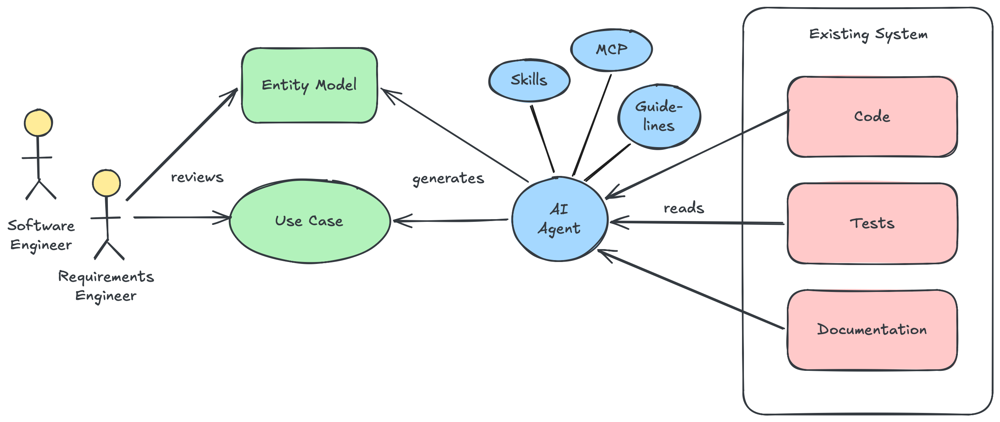
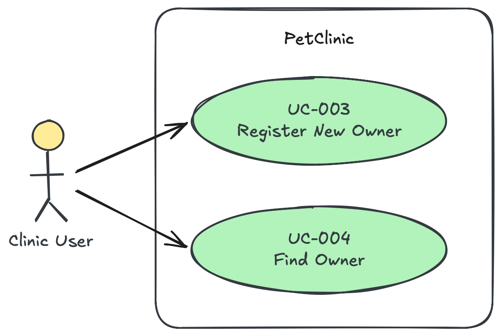
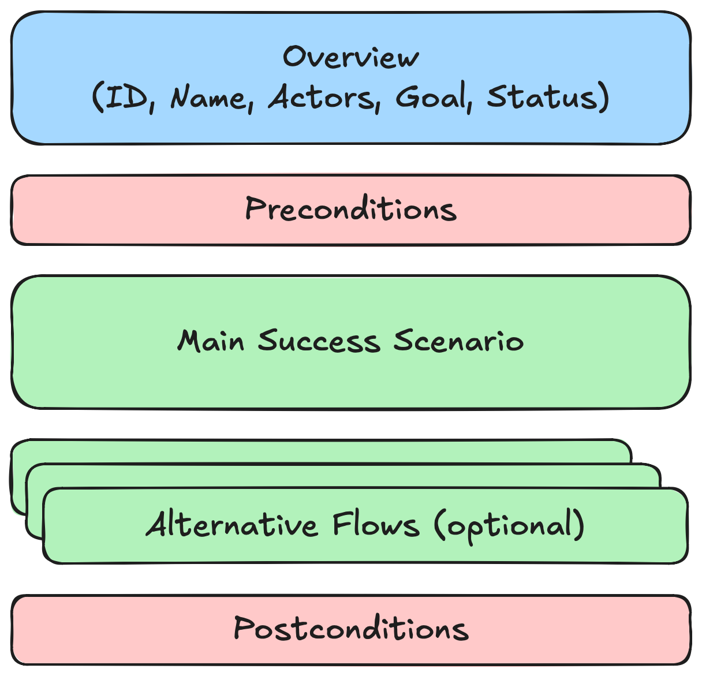

Many developers expect: precise input, perfect output.
The agent is non-deterministic
It makes plausible mistakes
It is not model-driven development
You are responsible for the output.
Before
Now
Writes every line
Writes specs, reviews code
Follows a ticket
Owns architecture and quality
Knowledge in the head
Knowledge in the repository
Uses the IDE
Builds and tunes the harness
The developer does not disappear. The work moves up one level.
Choosing a method10:26
Five frameworks at a glance
Framework
Core idea
Sweet spot
OpenSpec
Change proposals on top of living specs
Changes in existing code, lightweight
BMAD
A team of agent personas
Greenfield, agile flow with AI roles
GitHub Spec Kit
Constitution → specify → plan → tasks
Greenfield features, any agent
Kiro (AWS)
Spec-centric IDE with steering and hooks
One developer, one tool
AI Unified Process
Iterative process based on use cases
Enterprise, brownfield, long-lived systems
Choose by: greenfield or brownfield, lifetime, regulation and audit, team size, size of the context. Tools change every few weeks; check current versions.
AI Unified Process10:28
AI Unified Process at a glance
Vision & requirementsvision, requirements, glossary (prepared for you today)/requirements
Specificationuse case diagram, use cases, entity model, review/use-case-diagram/entity-model/use-case-spec/spec-review
Constructionthe agent generates code layer by layer/use-case-implement
Verificationtests and coverage against the spec/use-case-test/use-case-coverage
Iterative: one use case at a time, from spec to tested code
Every step is a skill with a template, so the output has the same structure every time
Traceable: requirement → use case → business rule → code → test
Humans write the specThe requirements engineer creates use cases and the entity model.
The agent buildsIt reads the spec and generates code and tests, steered by skills, MCP and guidelines.
Humans reviewThe software engineer reviews code and tests against the use case.
AI Unified Process10:32
Brownfield workflow

The agent readsCode, tests and documentation of the existing system.
The agent writes the spec/reverse-engineer generates use cases and the entity model.
Humans review, then spec-firstThe code shows what the system does, not what it should do. From here, every change starts in the spec.
Use cases10:34
Why use cases?

The diagram: who uses the system for which goal

The specification: one document per use case in a clearly structured format, based on the work of Ivar Jacobson and Alistair Cockburn
Use cases10:35
Behavior, not code
Code-level requirement
“Add POST /reservations/{id}/cancel and a column cancelled_at.”
Describes the how
Only developers can read it
Outdated after the next refactoring
Behavior specification
“A guest can cancel a reservation up to 24 hours before arrival. The system then makes the room available again.”
Describes the what
Every stakeholder can read it
Stays valid when the code changes
Can be tested from the outside
Use cases10:36
Readable by every stakeholder
UC-002 Reserve Room
Actor: Guest
Precondition: The guest has found an available room
Main Success Scenario
1. The guest selects the room and the dates.
2. The system shows the total price.
3. The guest enters name and email and confirms.
4. The system saves the reservation and sends
a confirmation email.
Alternative Flows
4a. The room was booked in the meantime. The system
informs the guest and shows other rooms.
Business Rules
BR-001 A reservation is at least one night.
Who reads it?
End user: is this how I work?
Business: are the rules right?
Developer and agent: what to build
Tester: what to test
No screens, no APIs, no tables in a use case.
Part 210:40
02 · THE PROJECT
A hotel with ten rooms
HRS, the hotel reservation system you build today.
The project10:40
What is already in the repository
“We are the proud owners of a small, ten-room hotel. We need a system to manage reservations, guest check-in/check-out, and room cleaning.”